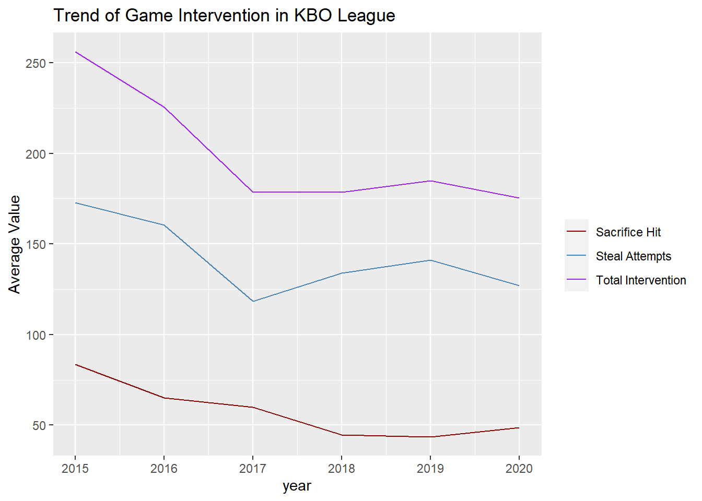
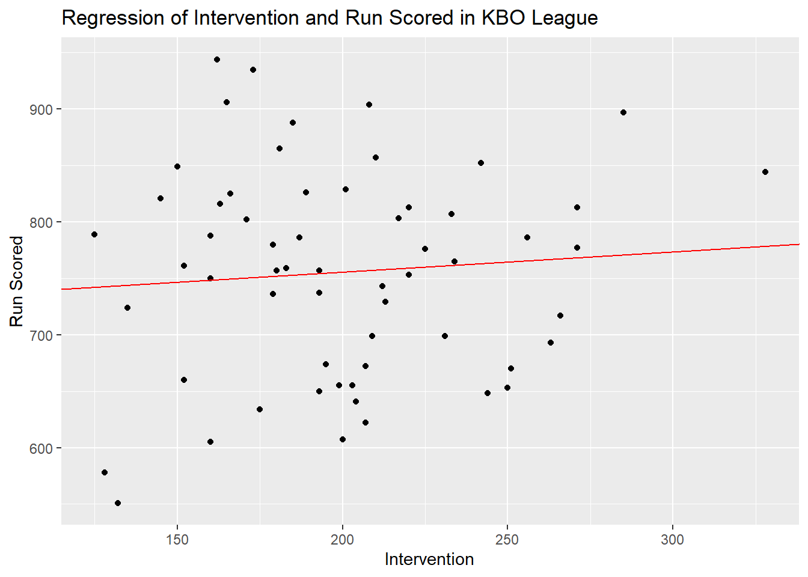
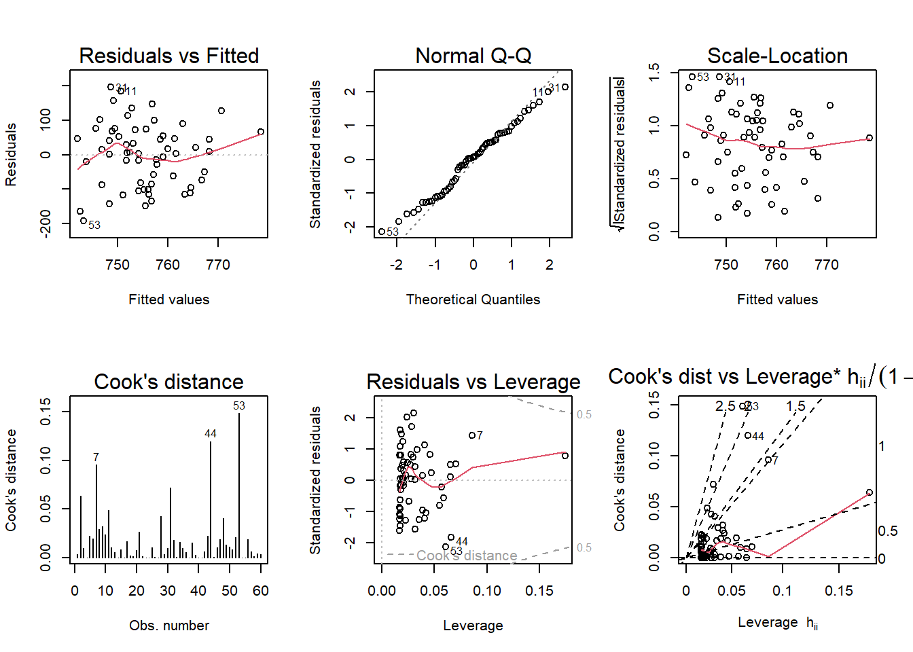
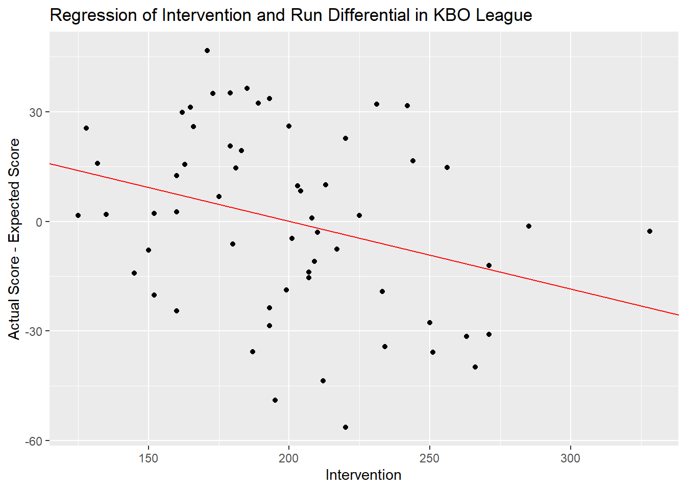
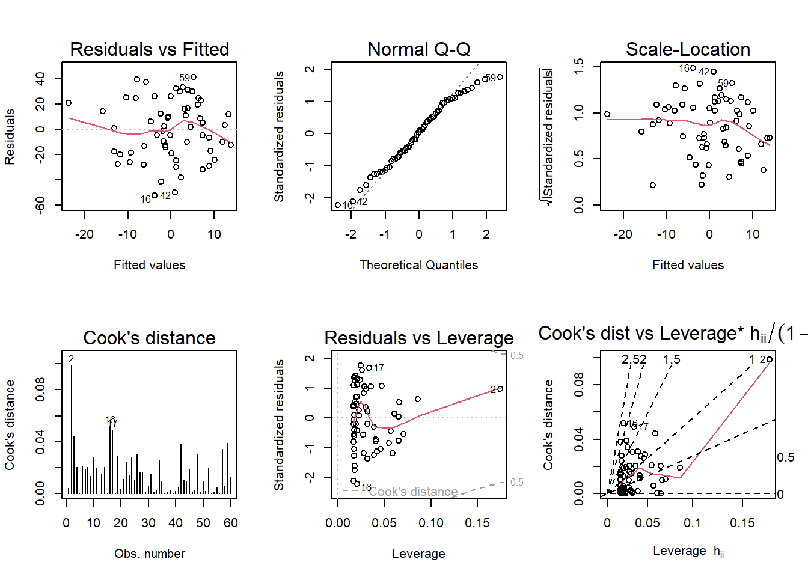

The debate about the role of a manager in baseball games has always been a hot potato. In the case of the United States, MLB(Major League Baseball), various quantitative analyses have been conducted on this topic since the famous Moneyball(2004, Lewis, M.), and most studies conclude that the role of the coach in the team’s victory or defeat is not significant.
Then, what is the case in Korea? Baseball is also prevalent in Korea as the most popular professional sport, and quantitative analysis has been conducted on these topics along with the activation of data analysis techniques over the past decade. However, the number is not large, but if you look at representative studies, there is a result of studying the difference in team performance according to the manager’s tendency.(Lee, Kim, and Lee, 2007)
If so, what is the relationship between the specific manager’s behavior and the team’s performance, other than the relationship between the manager’s tendency and performance? More specifically, does the team’s performance improve if the manager intervenes a lot in the game? Unfortunately, it was difficult to find a study on these problems targeting KBO(Korean Baseball Organization) league in Korea.
With this awareness of the problem, this study aims to check whether the manager’s intervention improves the team’s performance in baseball games in Korean professional baseball(KBO league). In other words, the research question is, “What is the relationship between the manager’s intervention and the team’s performance in the KBO League?”
Major Concepts
Before review the problem, let’s look at some important concepts. First of all, baseball’s team performance is divided into wins and losses, and of course, the more wins, the better. And the victory of the game is given to the team that scores more points, so the team’s performance is more advantageous the more points they score and allow fewer runs. In addition, the manager of baseball directs the overall game, such as setting the team’s batting order and replacing pitchers at an appropriate time, and in terms of offense, he can directly intervene in the game through various operations such as bunt and steal direction. Finally, the KBO League is a Korean professional baseball league that started with six teams in 1982, and 10 teams have been participating since 2015. Currently, each team plays 144 games in a season, with a total of 720 games.
Hypothesis and Research Design
Based on the research problems and major concepts discussed above, the hypothesis of this study was established as follows.
Ha-1: In the KBO League, teams with a lot of managers’ intervention in games have higher scoring ability than teams that do not.
(High Group Average Score > Normal Group Average Score > Low Group Average Score)
Ha-2: In the KBO League, the more the manager intervenes in the game, the higher the team’s scoring ability.
(In the regression model of scoring and intervention, regression coefficient for intervention > 0)
Hb-1: In the KBO League, the difference between the actual score and the expected score of the team with a lot of intervention in the game will be greater than that of the team that does not.
(The difference between the actual score and the expected score of high group > The difference between the actual score and the expected score of normal group > The difference between the actual score and the expected score of low group)
Hb-2: In the KBO League, the more interventions there are in the game, the greater the difference between actual scores and expected scores.
(In the regression model of the difference between the actual score and the expected score and intervention, regression coefficient for intervention > 0)
Since baseball games are quite complex, I would like to verify research problems in various ways. Therefore, hypotheses were also defined in four forms as above.
For Ha-1, teams will be classified according to the frequency of game intervention and the average of which groups have a high average score will be compared. For Ha-2, we will conduct a regression analysis on how the team’s average score moves as the game intervention increases.
For Hb, we will use the concept of expected score. Expected score refers to the expected score considering the team’s basic offensive power, and an expected score generation formula can be obtained through regression analysis using batting indicators such as batting average and slugging rate. From this point of view, the manager’s intervention can confirm whether the team’s actual score is higher or lower than the team’s expected score.
Hb-1 will classify groups according to the frequency of intervention in the game, such as Ha-1, and compare the average of the expected scores of the teams in each group with the actual scores. Like Ha-2, Hb-2 will be analyzed the difference between the team’s actual score and the expected score depending on the degree of intervention in the game using regression.
Looking at the Data
Operational Definition
Until now, the concept of manager’s intervention in the game has been used. But how can we measure this. In fact, it is a subject that allows for extensive research on this alone. However, in this study, to simplify the analysis, I would like to operatively define it so that existing data can be used as it is. In other words, the team’s annual bunt(sacrifice hit, sh) and steal attempts(steal, st + stolen caught, sc) are defined as the manager’s intervention in the game.
Data Load
Before the full-fledged analysis, I would like to set the scope of the study first. Baseball shows quite different aspects from time to time, especially the average score showing quite differently from time to time. In particular, the KBO League has continued to expand its teams, and the proportion of stadiums used and foreign players has been determined every year. Considering this, only data after 2015 when the 10-team system was established will be used.
Code
Sys.setenv(LANG ="en")library(tidyverse)
Warning: package 'tidyverse' was built under R version 4.2.3
Warning: package 'ggplot2' was built under R version 4.2.3
Warning: package 'tibble' was built under R version 4.2.3
Warning: package 'dplyr' was built under R version 4.2.3
── Attaching core tidyverse packages ──────────────────────── tidyverse 2.0.0 ──
✔ dplyr 1.1.2 ✔ readr 2.1.4
✔ forcats 1.0.0 ✔ stringr 1.5.0
✔ ggplot2 3.4.2 ✔ tibble 3.2.1
✔ lubridate 1.9.2 ✔ tidyr 1.3.0
✔ purrr 1.0.1
── Conflicts ────────────────────────────────────────── tidyverse_conflicts() ──
✖ dplyr::filter() masks stats::filter()
✖ dplyr::lag() masks stats::lag()
ℹ Use the conflicted package (<http://conflicted.r-lib.org/>) to force all conflicts to become errors
New names:
Rows: 313 Columns: 28
── Column specification
────────────────────────────────────────────────────────
Delimiter: "," chr (1): team dbl (27): ...1, year, game, win, lose, tie,
run_scored, run_allowed, batters...
ℹ Use `spec()` to retrieve the full column specification for this data. ℹ
Specify the column types or set `show_col_types = FALSE` to quiet this message.
• `` -> `...1`
# making average variables by years# for sh## create an empty data frame to store the resultssh_df <-data.frame(year =integer(), avr_sh =numeric())## loop over the yearsfor (i in2015:2020) {## filter the data for the current year and calculate the sum of sh variable year_sh <- kbo_df %>%filter(year == i) %>%summarize(year_av_sh =sum(sh)/n()) %>%pull(year_av_sh)## add the result to the data frame sh_df <-rbind(sh_df, data.frame(year = i, avr_sh = year_sh))}# for sbsb_df <-data.frame(year =integer(), avr_sb =numeric())for (i in2015:2020) { year_sb <- kbo_df %>%filter(year == i) %>%summarize(year_av_sb =sum(sb)/n()) %>%pull(year_av_sb) sb_df <-rbind(sb_df, data.frame(year=i, avr_sb=year_sb))}# for cscs_df <-data.frame(year =integer(), avr_cs =numeric())for (i in2015:2020) { year_cs <- kbo_df %>%filter(year == i) %>%summarize(year_av_cs =sum(cs)/n()) %>%pull(year_av_cs) cs_df <-rbind(cs_df, data.frame(year=i, avr_cs=year_cs))}
Code
# print the results data framesa_df<-left_join(sb_df, cs_df)
# drawing a graphlibrary(ggplot2)ggplot(int_da, aes(x=year)) +geom_line(aes(y = avr_sh, color ="Sacrifice Hit")) +geom_line(aes(y = avr_sa, color="Steal Attempts")) +geom_line(aes(y = avr_int, color ="Total Intervention")) +labs(title ="Trend of Game Intervention in KBO League", color ="Variable", y ="Average Value") +scale_color_manual("", breaks =c("Sacrifice Hit", "Steal Attempts", "Total Intervention"),values =c("darkred", "steelblue", "purple"))

Looking at the frequency of intervention in the game since 2015, it can be seen that the overall trend has been downward, but the total frequency of intervention has been stable since 2017.
Hypothesis Testing: Ha(Actual Scores)
Ha-1
To verify Ha-1, each team by year is divided into three groups according to the frequency of game intervention. Teams with more than 1 sd intervention are assigned to the high group compared to the overall average frequency of intervention for the year. In the low group, on the contrary, fewer teams than 1 sd are involved, and the rest are assigned to the normal group.
Code
# merge those dataint_df<-merge(merge(sh_df, sb_df, by ="year", all =TRUE), cs_df, by="year", all=TRUE)# left join to original datatot_df<-left_join(kbo_df, int_df)
Joining with `by = join_by(year)`
Code
# making intervention variablestot_df<-tot_df %>%mutate(st_att=sb+cs, inter = sh+st_att, avr_inter=avr_sh+avr_sb+avr_cs)tot_df[, c('year','team','sh','st_att','inter','avr_inter')]
# making sd of intervention by each yearsd_int<-data.frame(year =integer(), sd_i=numeric())for (i in2015:2020) { year_sd <- tot_df %>%filter(year == i) %>%summarize(year_sd_int =sd(inter)) %>%pull(year_sd_int) sd_int<-rbind(sd_int, data.frame(year = i, sd_i= year_sd))}tot_df<-left_join(tot_df, sd_int)
Joining with `by = join_by(year)`
Code
# making three type variablestot_df<-tot_df %>%mutate(inter_fre_sd=ifelse(inter>avr_inter+sd_i, "high", ifelse(inter<avr_inter-sd_i, "low", "normal")))tot_df[, c('year','team','run_scored', 'inter_fre_sd')]
# A tibble: 60 × 4
year team run_scored inter_fre_sd
<dbl> <chr> <dbl> <chr>
1 2015 Bears 807 normal
2 2015 Dinos 844 high
3 2015 Eagles 717 normal
4 2015 Giants 765 normal
5 2015 Heros 904 low
6 2015 Landers 693 normal
7 2015 Lions 897 normal
8 2015 Tigers 648 normal
9 2015 Twins 653 normal
10 2015 Wiz 670 normal
# ℹ 50 more rows
Code
# making tabletable(tot_df$inter_fre_sd, tot_df$year)
Of the 60 data in the six-year period, 9 were assigned to the high group and 9 to the low group, respectively, and the rest were normal groups. Now let’s verify the average difference between them.
Code
# check the score by groupstot_df %>%group_by(inter_fre_sd) %>%summarise(avr_run=mean(run_scored))
# A tibble: 3 × 2
inter_fre_sd avr_run
<chr> <dbl>
1 high 766.
2 low 748.
3 normal 755.
Df Sum Sq Mean Sq F value Pr(>F)
inter_fre_sd 2 1478 739 0.084 0.919
Residuals 57 500775 8786
Looking at the average difference between each group, the high group has the highest average score and the low group has the lowest average score. In other words, when compared simply, the average score of the group with a lot of game intervention is higher. However, since the value of p as an AVONA result is 0.919, there is no statistical significance of this result.(at the 0.05 level of significance). In other words, it is difficult to accept it as a meaningful result.
Ha-2
Next, I will examine how game intervention has a relationship with scoring through regression analysis between game intervention and score.
Call:
lm(formula = run_scored ~ inter, data = tot_df)
Residuals:
Min 1Q Median 3Q Max
-192.376 -81.702 5.755 65.895 195.249
Coefficients:
Estimate Std. Error t value Pr(>|t|)
(Intercept) 719.7232 58.6681 12.268 <2e-16 ***
inter 0.1792 0.2874 0.624 0.535
---
Signif. codes: 0 '***' 0.001 '**' 0.01 '*' 0.05 '.' 0.1 ' ' 1
Residual standard error: 92.75 on 58 degrees of freedom
Multiple R-squared: 0.006658, Adjusted R-squared: -0.01047
F-statistic: 0.3888 on 1 and 58 DF, p-value: 0.5354
Code
ggplot(tot_df, aes(inter, run_scored),xlab="Intervention",ylab="Run Scored") +geom_point() +geom_abline(slope=0.1792, intercept =719.7232, color ="red") +labs(title ="Regression of Intervention and Run Scored in KBO League", x ="Intervention", y ="Run Scored")

Similar to the previous simple average comparison, the higher the number of interventions in the game, the higher the score. In other words, the coefficient of intervention in the game was 0.1792, indicating that the score per game increased by 0.1792 points. However, the R square value was 0.006658, and the randomness of game intervention was very low to explain the team’s score, and the p value of the slope of the regression equation was also 0.5354, which was not significant at the 0.05 level.
Next, I will check if there are any violations of various assumptions necessary for regression analysis.
Code
# check the assumptionspar(mfrow=c(2:3))plot(ha2, which=1:6)

As a result of the confirmation, there seems to be no particular violation.
Hypothesis Testing: Hb(Expected Scores)
Expected Run Scored
Next, I will analyze the effect of game intervention using expected scores. First, we need to look at the meaning of expected scores.
In baseball, scoring is done through a combination of various offensive acts. For example, if a home run comes out after a hit, you will get two points, but if a double play comes out after a hit, you will not be able to score and increase the out count by two. As such, each batting event is correlated with scoring, and this relationship can be used to obtain the team’s expected score, which can be said to show the team’s basic offensive power.
However, the question here is what variables will be used to predict the team’s expected score.
First, I obtained a regression equation between them and scoring using all batting indicators.
Code
# regression with every batting statexp_m_1<-lm(run_scored~hit+double+triple+hr+bb+ibb+hbp+so+sf+gidp, tot_df)summary(exp_m_1)
Call:
lm(formula = run_scored ~ hit + double + triple + hr + bb + ibb +
hbp + so + sf + gidp, data = tot_df)
Residuals:
Min 1Q Median 3Q Max
-54.750 -9.564 0.773 12.749 33.562
Coefficients:
Estimate Std. Error t value Pr(>|t|)
(Intercept) -413.66438 82.53095 -5.012 7.42e-06 ***
hit 0.48736 0.05270 9.248 2.53e-12 ***
double 0.32361 0.15117 2.141 0.0373 *
triple 1.10204 0.46735 2.358 0.0224 *
hr 0.93490 0.11086 8.433 4.18e-11 ***
bb 0.45364 0.05571 8.143 1.16e-10 ***
ibb -0.09291 0.56884 -0.163 0.8709
hbp 0.26767 0.16555 1.617 0.1123
so -0.01222 0.04394 -0.278 0.7820
sf 0.56138 0.39545 1.420 0.1621
gidp -0.08900 0.25885 -0.344 0.7325
---
Signif. codes: 0 '***' 0.001 '**' 0.01 '*' 0.05 '.' 0.1 ' ' 1
Residual standard error: 19.79 on 49 degrees of freedom
Multiple R-squared: 0.9618, Adjusted R-squared: 0.954
F-statistic: 123.4 on 10 and 49 DF, p-value: < 2.2e-16
Although the explanatory power was quite high (R square: 0.9618), the regression coefficient for some variables was not significant at the 0.05 level.
I will now refit the model except for those variables. The results are as follows.
Code
# regression with every significant batting statexp_m_1_m<-lm(run_scored~hit+double+triple+hr+bb, tot_df)summary(exp_m_1_m)
Call:
lm(formula = run_scored ~ hit + double + triple + hr + bb, data = tot_df)
Residuals:
Min 1Q Median 3Q Max
-47.545 -14.651 2.097 16.132 32.664
Coefficients:
Estimate Std. Error t value Pr(>|t|)
(Intercept) -437.25592 46.03536 -9.498 4.10e-13 ***
hit 0.51153 0.04939 10.357 1.95e-14 ***
double 0.33971 0.14676 2.315 0.024455 *
triple 1.48367 0.42211 3.515 0.000899 ***
hr 0.92489 0.09362 9.880 1.05e-13 ***
bb 0.46009 0.05072 9.072 1.91e-12 ***
---
Signif. codes: 0 '***' 0.001 '**' 0.01 '*' 0.05 '.' 0.1 ' ' 1
Residual standard error: 20.15 on 54 degrees of freedom
Multiple R-squared: 0.9563, Adjusted R-squared: 0.9523
F-statistic: 236.6 on 5 and 54 DF, p-value: < 2.2e-16
The regression coefficient of all variables is significant at the 0.05 level, and the R square value is 0.9563. Now let’s call this model EM 1(expected score model 1).
Next, I will find out the on-base percentage and slugging percentage, which can be said to be a combination of these indicators, and then check the relationship between scoring and them.
# fitting regression model using obp and slgexp_m_2<-lm(run_scored~obp+slg, exp_df)summary(exp_m_2)
Call:
lm(formula = run_scored ~ obp + slg, data = exp_df)
Residuals:
Min 1Q Median 3Q Max
-56.288 -18.876 1.651 19.630 46.770
Coefficients:
Estimate Std. Error t value Pr(>|t|)
(Intercept) -912.09 80.51 -11.328 3.20e-16 ***
obp 3019.45 341.62 8.839 2.84e-12 ***
slg 1411.78 157.31 8.975 1.70e-12 ***
---
Signif. codes: 0 '***' 0.001 '**' 0.01 '*' 0.05 '.' 0.1 ' ' 1
Residual standard error: 25.4 on 57 degrees of freedom
Multiple R-squared: 0.9268, Adjusted R-squared: 0.9242
F-statistic: 360.9 on 2 and 57 DF, p-value: < 2.2e-16
If you look at the regression equation derived using only the on-base rate and the slugging rate instead of numerous variables, we can explain about 93% of the randomness of the score using only the on-base rate and the slugging rate. (R Square = 0.9268). In addition, the regression coefficient of the long hit rate and the on-base rate was also found to be significant at the 0.05 level. Now let’s call this model EM 2(expected score model 2)
Model Comparison
Now let’s compare the two models, EM 1 and EM 2, and decide which model to choose. First of all, when comparing the R square values, the model (EM 1) using every significant batting variables is .9563, and the model (EM 2) using the on-base rate and the slugging rate is 0.9268.
AIC is 538.3, 563.3, BIC is 553.0, 571.7, and PRESS is 21929.6, 36763.5, respectively. That is, EM 1 shows better performance in all aspects. But there is one thing to consider here. It is the multicollinearity of variables. Most of the batting indicators in baseball are highly correlated. Simply put, a good batter is likely to have a lot of hits and home runs are likely to have a lot of home runs. Actual data show a high correlation between hits, doubles, and home runs.
Code
# check the multicollinearitypairs(tot_df[,12:16])
Considering these points, I will choose EM 2 instead of EM 1. This is because EM 2 is much simpler using only two variables, and its explanatory power is not that low compared to EM 1.
Now, we can use this to get the expected score of each team and the difference between the actual score and the expected score.
Code
# get expected score by obp, slgexp_df$exp_score<-predict(exp_m_2, newdata = exp_df)exp_df<-exp_df %>%mutate(run_diff=run_scored-exp_score)exp_df[,c("year","team","run_scored","exp_score","run_diff","inter_fre_sd")]
# A tibble: 60 × 6
year team run_scored exp_score run_diff inter_fre_sd
<dbl> <chr> <dbl> <dbl> <dbl> <chr>
1 2015 Bears 807 826. -19.2 normal
2 2015 Dinos 844 847. -2.75 high
3 2015 Eagles 717 757. -39.9 normal
4 2015 Giants 765 799. -34.3 normal
5 2015 Heros 904 903. 0.924 low
6 2015 Landers 693 724. -31.4 normal
7 2015 Lions 897 898. -1.34 normal
8 2015 Tigers 648 631. 16.6 normal
9 2015 Twins 653 681. -27.8 normal
10 2015 Wiz 670 706. -35.8 normal
# ℹ 50 more rows
Hb-1
Hypothesis hb1 can now be verified. The basic logic is as follows. If the manager’s intervention in the game has a positive effect on the team’s score, the difference between the actual score and the expected score will be high in the group with a high degree of intervention in the game. If not, the difference between the actual score of the high group and the expected score will be lower than that of the low group.
Code
# check the score by groupsexp_df %>%group_by(inter_fre_sd) %>%summarise(avr_run_diff=mean(run_diff))
# A tibble: 3 × 2
inter_fre_sd avr_run_diff
<chr> <dbl>
1 high -3.78
2 low 8.26
3 normal -0.959
Df Sum Sq Mean Sq F value Pr(>F)
inter_fre_sd 2 782 390.8 0.619 0.542
Residuals 57 35982 631.3
The result was the opposite of the result compared to the simple score discussed earlier. In other words, the difference between the actual score and the expected score of the group with high game intervention was lower than that of the group that did not. Considering the team’s basic offensive power, the manager’s intervention in the game rather makes the actual score lower than the team’s expected score. In other words, the manager’s intervention in the game rather reduces the team’s scoring ability.
However, the ANOVA results also showed that this did not have statistical significance at the 0.05 level.(p value: 0.542)
Hb-2
Next, I will conduct a regression analysis to find out the effect of game intervention on the difference between actual and expected scores.
Call:
lm(formula = run_diff ~ inter, data = exp_df)
Residuals:
Min 1Q Median 3Q Max
-52.554 -17.939 1.632 19.984 41.424
Coefficients:
Estimate Std. Error t value Pr(>|t|)
(Intercept) 37.03480 15.13122 2.448 0.0174 *
inter -0.18531 0.07412 -2.500 0.0153 *
---
Signif. codes: 0 '***' 0.001 '**' 0.01 '*' 0.05 '.' 0.1 ' ' 1
Residual standard error: 23.92 on 58 degrees of freedom
Multiple R-squared: 0.09729, Adjusted R-squared: 0.08173
F-statistic: 6.251 on 1 and 58 DF, p-value: 0.01526
Code
ggplot(exp_df, aes(inter, run_diff),xlab="Intervention",ylab="Actual Score - Expected Score") +geom_point() +geom_abline(slope=-0.18531, intercept =37.03480, color ="red") +labs(title ="Regression of Intervention and Run Differential in KBO League", x ="Intervention", y ="Actual Score - Expected Score")

As a result of the regression analysis, the regression coefficient of the actual score and the expected score was -0.185. In other words, the increase in game intervention negatively affects the difference between actual and expected scores, and in interpretation, the increase in game intervention has the effect of reducing actual scores compared to the team’s offensive power.
The R square value was 0.097 and the p-value was 0.015, which was found to be significant at the 0.05 level.
Finally, as a result of checking whether there is a violation of assumptions necessary for regression analysis, it does not appear that special treatment is required.
Code
# check the assumptionspar(mfrow=c(2:3))plot(hb2, which=1:6)

Conclusion
Regarding Ha
First of all, looking at each hypothesis, in the case of Ha-1, the average score of the group with many game interventions was high (high: 765.9, normal: 754.9, low: 748.1), and in the case of Ha-2, the unit of game intervention increased the team’s score by 0.1792. (Run Scored = 719.7232 + 0.1792*Intervention)
In other words, it was interpreted that the coach’s intervention in the game had a positive effect on the team’s scoring ability.
However, in the case of Ha-1, the p value was 0.919, and in the case of Ha-2, the p value of the regression coefficient was 0.5354. In other words, both hypotheses cannot be said to be statistically significant at the 0.05 significance level.
Regarding Hb
In the case of analysis using expected scores, the difference between actual scores and expected scores was used as a dependent variable(Run Differential.
In the case of Hb-1, contrary to Ha, it was found that the gap between actual and expected scores was high when the intervention in the game was low. (high: -3.78, normal: -0.96, low: 8.26) This implies that intervention in the game is negative for the team’s scoring ability. However, as a result of ANOVA analysis on this, the p value was 0.542, which was not significant at the significance level of 0.05.
Next, in the case of Hb-2, it was found that game intervention had a negative effect on the gap between actual and expected scores. (Run Differential = 37.03480 -0.18531*Intervention)
In other words, like Hb-1, it can be interpreted that the manager’s intervention in the game negatively affects the team’s scoring ability. In addition, the regression coefficient of intervention was also found to be significant at the significance level of 0.05 as the p value is 0.0153.
Discussions
Of the four hypotheses, only Hb-2 was able to draw statistically significant conclusions, and that hypothesis was wrong and could be concluded at the significance level of 0.05. In other words, it can be concluded that the manager’s intervention in the game in KBO league baseball rather suppresses the actual score considering the team’s expected score level.
This conclusion is consistent with the recent trend of negatively evaluating and avoiding the manager’s intervention in the game. However, when looking at the baseball game as a whole, pitching and defense should be considered in addition to hitting. In other words, only when additional research is conducted on these aspects, more rigorous discussions on the role of managers in baseball can be made.
References
Lewis, M. (2004). Moneyball: The art of winning an unfair game. New York: Norton.
Smart, D., & Wolfe, R. (2003). The contribution of leadership and human resources to organizational success: An empirical assessment of performance in Major League Baseball. European Sport Management Quarterly, 3, 165–188.
Winfree, J., & Wolfe, R. (2008). Major League Baseball Managers: Do They Matter? Journal of Sport Management 22(3):303-321.
Lee, J., Kim, Y., & Lee, J. (2007). Relationship between Leadership of Korean Professional Baseball Coaches and Performance of Their Teams. Soonchunhyang Natural Science Research 13(2):145-155.
Source Code
---title: "The effect of a manager's intervention in the game on the team's scoring ability in the KBO League"author: "Young Soo Choi"description: "Final Project"date: "05/22/2023"format: html: toc: true code-fold: true code-copy: true code-tools: truecategories: - final project---# Intro## Research ProblemsThe debate about the role of a manager in baseball games has always been a hot potato. In the case of the United States, MLB(Major League Baseball), various quantitative analyses have been conducted on this topic since the famous Moneyball(2004, Lewis, M.), and most studies conclude that the role of the coach in the team's victory or defeat is not significant.Then, what is the case in Korea? Baseball is also prevalent in Korea as the most popular professional sport, and quantitative analysis has been conducted on these topics along with the activation of data analysis techniques over the past decade. However, the number is not large, but if you look at representative studies, there is a result of studying the difference in team performance according to the manager's tendency.(Lee, Kim, and Lee, 2007)If so, what is the relationship between the specific manager's behavior and the team's performance, other than the relationship between the manager's tendency and performance? More specifically, does the team's performance improve if the manager intervenes a lot in the game? Unfortunately, it was difficult to find a study on these problems targeting KBO(Korean Baseball Organization) league in Korea.With this awareness of the problem, this study aims to check whether the manager's intervention improves the team's performance in baseball games in Korean professional baseball(KBO league). In other words, the research question is, **"What is the relationship between the manager's intervention and the team's performance in the KBO League?"**## Major ConceptsBefore review the problem, let's look at some important concepts. First of all, baseball's team performance is divided into wins and losses, and of course, the more wins, the better. And the victory of the game is given to the team that scores more points, so the team's performance is more advantageous the more points they score and allow fewer runs. In addition, the manager of baseball directs the overall game, such as setting the team's batting order and replacing pitchers at an appropriate time, and in terms of offense, he can directly intervene in the game through various operations such as bunt and steal direction. Finally, the KBO League is a Korean professional baseball league that started with six teams in 1982, and 10 teams have been participating since 2015. Currently, each team plays 144 games in a season, with a total of 720 games.## Hypothesis and Research DesignBased on the research problems and major concepts discussed above, the hypothesis of this study was established as follows.**Ha-1: In the KBO League, teams with a lot of managers' intervention in games have higher scoring ability than teams that do not.***(High Group Average Score \> Normal Group Average Score \> Low Group Average Score)***Ha-2: In the KBO League, the more the manager intervenes in the game, the higher the team's scoring ability.***(In the regression model of scoring and intervention, regression coefficient for intervention \> 0)***Hb-1: In the KBO League, the difference between the actual score and the expected score of the team with a lot of intervention in the game will be greater than that of the team that does not.***(The difference between the actual score and the expected score of high group \> The difference between the actual score and the expected score of normal group \> The difference between the actual score and the expected score of low group)***Hb-2: In the KBO League, the more interventions there are in the game, the greater the difference between actual scores and expected scores.***(In the regression model of the difference between the actual score and the expected score and intervention, regression coefficient for intervention \> 0)*Since baseball games are quite complex, I would like to verify research problems in various ways. Therefore, hypotheses were also defined in four forms as above.For Ha-1, teams will be classified according to the frequency of game intervention and the average of which groups have a high average score will be compared. For Ha-2, we will conduct a regression analysis on how the team's average score moves as the game intervention increases.For Hb, we will use the concept of expected score. Expected score refers to the expected score considering the team's basic offensive power, and an expected score generation formula can be obtained through regression analysis using batting indicators such as batting average and slugging rate. From this point of view, the manager's intervention can confirm whether the team's actual score is higher or lower than the team's expected score.Hb-1 will classify groups according to the frequency of intervention in the game, such as Ha-1, and compare the average of the expected scores of the teams in each group with the actual scores. Like Ha-2, Hb-2 will be analyzed the difference between the team's actual score and the expected score depending on the degree of intervention in the game using regression.# Looking at the Data## Operational DefinitionUntil now, the concept of manager's intervention in the game has been used. But how can we measure this. In fact, it is a subject that allows for extensive research on this alone. However, in this study, to simplify the analysis, I would like to operatively define it so that existing data can be used as it is. In other words, the team's annual bunt(sacrifice hit, sh) and steal attempts(steal, st + stolen caught, sc) are defined as the manager's intervention in the game.## Data LoadBefore the full-fledged analysis, I would like to set the scope of the study first. Baseball shows quite different aspects from time to time, especially the average score showing quite differently from time to time. In particular, the KBO League has continued to expand its teams, and the proportion of stadiums used and foreign players has been determined every year. Considering this, only data after 2015 when the 10-team system was established will be used.```{r}Sys.setenv(LANG ="en")library(tidyverse)# loading datakbo_df<-read_csv("~/R/603_Spring_2023/posts/_data/kbo_df.csv")kbo_df<-kbo_df[254:313,2:28]head(kbo_df)```## Looking at the average intervention by year```{r}# making average variables by years# for sh## create an empty data frame to store the resultssh_df <-data.frame(year =integer(), avr_sh =numeric())## loop over the yearsfor (i in2015:2020) {## filter the data for the current year and calculate the sum of sh variable year_sh <- kbo_df %>%filter(year == i) %>%summarize(year_av_sh =sum(sh)/n()) %>%pull(year_av_sh)## add the result to the data frame sh_df <-rbind(sh_df, data.frame(year = i, avr_sh = year_sh))}# for sbsb_df <-data.frame(year =integer(), avr_sb =numeric())for (i in2015:2020) { year_sb <- kbo_df %>%filter(year == i) %>%summarize(year_av_sb =sum(sb)/n()) %>%pull(year_av_sb) sb_df <-rbind(sb_df, data.frame(year=i, avr_sb=year_sb))}# for cscs_df <-data.frame(year =integer(), avr_cs =numeric())for (i in2015:2020) { year_cs <- kbo_df %>%filter(year == i) %>%summarize(year_av_cs =sum(cs)/n()) %>%pull(year_av_cs) cs_df <-rbind(cs_df, data.frame(year=i, avr_cs=year_cs))}``````{r}# print the results data framesa_df<-left_join(sb_df, cs_df)sa_df<-mutate(sa_df, avr_sa=avr_sb+avr_cs)int_da<-left_join(sh_df, sa_df)int_da<-mutate(int_da, avr_int=avr_sh+avr_sa)int_da``````{r}# drawing a graphlibrary(ggplot2)ggplot(int_da, aes(x=year)) +geom_line(aes(y = avr_sh, color ="Sacrifice Hit")) +geom_line(aes(y = avr_sa, color="Steal Attempts")) +geom_line(aes(y = avr_int, color ="Total Intervention")) +labs(title ="Trend of Game Intervention in KBO League", color ="Variable", y ="Average Value") +scale_color_manual("", breaks =c("Sacrifice Hit", "Steal Attempts", "Total Intervention"),values =c("darkred", "steelblue", "purple"))```Looking at the frequency of intervention in the game since 2015, it can be seen that the overall trend has been downward, but the total frequency of intervention has been stable since 2017.# Hypothesis Testing: Ha(Actual Scores)## Ha-1To verify Ha-1, each team by year is divided into three groups according to the frequency of game intervention. Teams with more than 1 sd intervention are assigned to the high group compared to the overall average frequency of intervention for the year. In the low group, on the contrary, fewer teams than 1 sd are involved, and the rest are assigned to the normal group.```{r}# merge those dataint_df<-merge(merge(sh_df, sb_df, by ="year", all =TRUE), cs_df, by="year", all=TRUE)# left join to original datatot_df<-left_join(kbo_df, int_df)# making intervention variablestot_df<-tot_df %>%mutate(st_att=sb+cs, inter = sh+st_att, avr_inter=avr_sh+avr_sb+avr_cs)tot_df[, c('year','team','sh','st_att','inter','avr_inter')]``````{r}# making sd of intervention by each yearsd_int<-data.frame(year =integer(), sd_i=numeric())for (i in2015:2020) { year_sd <- tot_df %>%filter(year == i) %>%summarize(year_sd_int =sd(inter)) %>%pull(year_sd_int) sd_int<-rbind(sd_int, data.frame(year = i, sd_i= year_sd))}tot_df<-left_join(tot_df, sd_int)# making three type variablestot_df<-tot_df %>%mutate(inter_fre_sd=ifelse(inter>avr_inter+sd_i, "high", ifelse(inter<avr_inter-sd_i, "low", "normal")))tot_df[, c('year','team','run_scored', 'inter_fre_sd')]``````{r}# making tabletable(tot_df$inter_fre_sd, tot_df$year)table(tot_df$inter_fre_sd)```Of the 60 data in the six-year period, 9 were assigned to the high group and 9 to the low group, respectively, and the rest were normal groups. Now let's verify the average difference between them.```{r}# check the score by groupstot_df %>%group_by(inter_fre_sd) %>%summarise(avr_run=mean(run_scored))# anovaha1<-aov(run_scored~inter_fre_sd, data=tot_df)summary(ha1)```Looking at the average difference between each group, the high group has the highest average score and the low group has the lowest average score. In other words, when compared simply, the average score of the group with a lot of game intervention is higher. However, since the **value of p as an AVONA result is 0.919**, there is no statistical significance of this result.(at the 0.05 level of significance). In other words, it is difficult to accept it as a meaningful result.## Ha-2Next, I will examine how game intervention has a relationship with scoring through regression analysis between game intervention and score.```{r}# regressionha2<-lm(run_scored~inter, tot_df)summary(ha2)``````{r}ggplot(tot_df, aes(inter, run_scored),xlab="Intervention",ylab="Run Scored") +geom_point() +geom_abline(slope=0.1792, intercept =719.7232, color ="red") +labs(title ="Regression of Intervention and Run Scored in KBO League", x ="Intervention", y ="Run Scored")```Similar to the previous simple average comparison, the higher the number of interventions in the game, the higher the score. In other words, the coefficient of intervention in the game was 0.1792, indicating that the score per game increased by 0.1792 points. However, the R square value was 0.006658, and the randomness of game intervention was very low to explain the team's score, and the **p value of the slope of the regression equation was also 0.5354**, which was not significant at the 0.05 level.Next, I will check if there are any violations of various assumptions necessary for regression analysis.```{r}# check the assumptionspar(mfrow=c(2:3))plot(ha2, which=1:6)```As a result of the confirmation, there seems to be no particular violation.# Hypothesis Testing: Hb(Expected Scores)## Expected Run ScoredNext, I will analyze the effect of game intervention using expected scores. First, we need to look at the meaning of expected scores.In baseball, scoring is done through a combination of various offensive acts. For example, if a home run comes out after a hit, you will get two points, but if a double play comes out after a hit, you will not be able to score and increase the out count by two. As such, each batting event is correlated with scoring, and this relationship can be used to obtain the team's expected score, which can be said to show the team's basic offensive power.However, the question here is what variables will be used to predict the team's expected score.First, I obtained a regression equation between them and scoring using all batting indicators.```{r}# regression with every batting statexp_m_1<-lm(run_scored~hit+double+triple+hr+bb+ibb+hbp+so+sf+gidp, tot_df)summary(exp_m_1)```Although the explanatory power was quite high (R square: 0.9618), the regression coefficient for some variables was not significant at the 0.05 level.I will now refit the model except for those variables. The results are as follows.```{r}# regression with every significant batting statexp_m_1_m<-lm(run_scored~hit+double+triple+hr+bb, tot_df)summary(exp_m_1_m)```The regression coefficient of all variables is significant at the 0.05 level, and the R square value is 0.9563. Now let's call this model **EM 1**(expected score model 1).Next, I will find out the on-base percentage and slugging percentage, which can be said to be a combination of these indicators, and then check the relationship between scoring and them.```{r}# OBP = (Hits + Walks + Hit-by-Pitches) / (At-Bats + Walks + Hit-by-Pitches + Sacrifice Flies)exp_df<-tot_df %>%mutate(obp=(hit+bb+ibb+hbp)/(ab+bb+ibb+hbp+sf))# SLG = (1B + 2B x 2 + 3B x 3 + HR x 4) / ABexp_df<-exp_df%>%mutate(tb=hit-(double+triple+hr)+2*double+3*triple+4*hr)exp_df<-exp_df%>%mutate(slg=tb/ab)exp_df[,c("year", "team", "run_scored", "obp", "slg")]``````{r}# fitting regression model using obp and slgexp_m_2<-lm(run_scored~obp+slg, exp_df)summary(exp_m_2)```If you look at the regression equation derived using only the on-base rate and the slugging rate instead of numerous variables, we can explain about 93% of the randomness of the score using only the on-base rate and the slugging rate. (R Square = 0.9268). In addition, the regression coefficient of the long hit rate and the on-base rate was also found to be significant at the 0.05 level. Now let's call this model **EM 2**(expected score model 2)## Model ComparisonNow let's compare the two models, EM 1 and EM 2, and decide which model to choose. First of all, when comparing the R square values, the model (EM 1) using every significant batting variables is .9563, and the model (EM 2) using the on-base rate and the slugging rate is 0.9268.```{r}# AICAIC(exp_m_1_m)AIC(exp_m_2)# BICBIC(exp_m_1_m)BIC(exp_m_2)# PRESSrunsco<-tot_df$run_scoredsum((runsco -predict(exp_m_1_m, newdata = tot_df))^2)sum((runsco -predict(exp_m_2, newdata = exp_df))^2)```AIC is 538.3, 563.3, BIC is 553.0, 571.7, and PRESS is 21929.6, 36763.5, respectively. That is, EM 1 shows better performance in all aspects. But there is one thing to consider here. It is the multicollinearity of variables. Most of the batting indicators in baseball are highly correlated. Simply put, a good batter is likely to have a lot of hits and home runs are likely to have a lot of home runs. Actual data show a high correlation between hits, doubles, and home runs.```{r}# check the multicollinearitypairs(tot_df[,12:16])cor(tot_df[,12:16])```Considering these points, I will choose EM 2 instead of EM 1. This is because EM 2 is much simpler using only two variables, and its explanatory power is not that low compared to EM 1.Now, we can use this to get the expected score of each team and the difference between the actual score and the expected score.```{r}# get expected score by obp, slgexp_df$exp_score<-predict(exp_m_2, newdata = exp_df)exp_df<-exp_df %>%mutate(run_diff=run_scored-exp_score)exp_df[,c("year","team","run_scored","exp_score","run_diff","inter_fre_sd")]```## Hb-1Hypothesis hb1 can now be verified. The basic logic is as follows. If the manager's intervention in the game has a positive effect on the team's score, the difference between the actual score and the expected score will be high in the group with a high degree of intervention in the game. If not, the difference between the actual score of the high group and the expected score will be lower than that of the low group.```{r}# check the score by groupsexp_df %>%group_by(inter_fre_sd) %>%summarise(avr_run_diff=mean(run_diff))# anovahb1<-aov(run_diff~inter_fre_sd, data=exp_df)summary(hb1)```The result was the opposite of the result compared to the simple score discussed earlier. In other words, the difference between the actual score and the expected score of the group with high game intervention was lower than that of the group that did not. Considering the team's basic offensive power, the manager's intervention in the game rather makes the actual score lower than the team's expected score. In other words, the manager's intervention in the game rather reduces the team's scoring ability.However, the **ANOVA results also showed that this did not have statistical significance at the 0.05 level.**(p value: 0.542)## Hb-2Next, I will conduct a regression analysis to find out the effect of game intervention on the difference between actual and expected scores.```{r}# regressionhb2<-lm(run_diff~inter, exp_df)summary(hb2)``````{r}ggplot(exp_df, aes(inter, run_diff),xlab="Intervention",ylab="Actual Score - Expected Score") +geom_point() +geom_abline(slope=-0.18531, intercept =37.03480, color ="red") +labs(title ="Regression of Intervention and Run Differential in KBO League", x ="Intervention", y ="Actual Score - Expected Score")```As a result of the regression analysis, the regression coefficient of the actual score and the expected score was **-0.185**. In other words, the increase in game intervention negatively affects the difference between actual and expected scores, and in interpretation, the increase in game intervention has the effect of reducing actual scores compared to the team's offensive power.The R square value was 0.097 and the **p-value was 0.015, which was found to be significant at the 0.05 level.**Finally, as a result of checking whether there is a violation of assumptions necessary for regression analysis, it does not appear that special treatment is required.```{r}# check the assumptionspar(mfrow=c(2:3))plot(hb2, which=1:6)```# Conclusion## Regarding HaFirst of all, looking at each hypothesis, in the case of Ha-1, the average score of the group with many game interventions was high (high: 765.9, normal: 754.9, low: 748.1), and in the case of Ha-2, the unit of game intervention increased the team's score by 0.1792. (Run Scored = 719.7232 + 0.1792\*Intervention)In other words, it was interpreted that the coach's intervention in the game had a positive effect on the team's scoring ability.However, in the case of Ha-1, the p value was 0.919, and in the case of Ha-2, the p value of the regression coefficient was 0.5354. In other words, **both hypotheses cannot be said to be statistically significant at the 0.05 significance level.**## Regarding HbIn the case of analysis using expected scores, the difference between actual scores and expected scores was used as a dependent variable(Run Differential.In the case of Hb-1, contrary to Ha, it was found that the gap between actual and expected scores was high when the intervention in the game was low. (high: -3.78, normal: -0.96, low: 8.26) This implies that intervention in the game is negative for the team's scoring ability. However, as a result of ANOVA analysis on this, the p value was 0.542, which was **not significant at the significance level of 0.05.**Next, in the case of Hb-2, it was found that game intervention had a negative effect on the gap between actual and expected scores. (Run Differential = 37.03480 -0.18531\*Intervention)In other words, like Hb-1, it can be interpreted that the manager's intervention in the game negatively affects the team's scoring ability. In addition, **the regression coefficient of intervention was also found to be significant at the significance level of 0.05 as the p value is 0.0153**.## Discussions**Of the four hypotheses, only Hb-2 was able to draw statistically significant conclusions, and that hypothesis was wrong and could be concluded at the significance level of 0.05.** In other words, it can be concluded that the manager's intervention in the game in KBO league baseball rather suppresses the actual score considering the team's expected score level.This conclusion is consistent with the recent trend of negatively evaluating and avoiding the manager's intervention in the game. However, when looking at the baseball game as a whole, pitching and defense should be considered in addition to hitting. In other words, only when additional research is conducted on these aspects, more rigorous discussions on the role of managers in baseball can be made.# ReferencesLewis, M. (2004). Moneyball: The art of winning an unfair game. New York: Norton.Smart, D., & Wolfe, R. (2003). The contribution of leadership and human resources to organizational success: An empirical assessment of performance in Major League Baseball. European Sport Management Quarterly, 3, 165--188.Winfree, J., & Wolfe, R. (2008). Major League Baseball Managers: Do They Matter? Journal of Sport Management 22(3):303-321.Lee, J., Kim, Y., & Lee, J. (2007). Relationship between Leadership of Korean Professional Baseball Coaches and Performance of Their Teams. Soonchunhyang Natural Science Research 13(2):145-155.